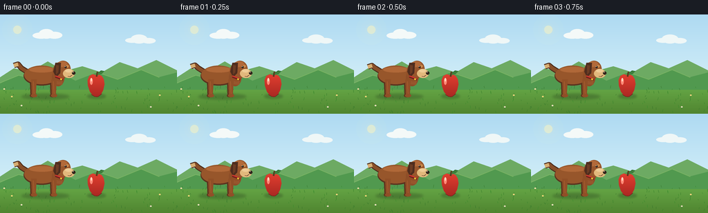
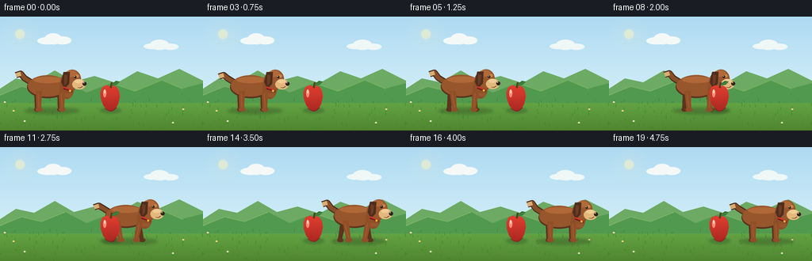

CODING AGENTS AS PIXEL WORLD MODELS
traex/GPT-5.6-Sol · instance_preservation_0002
点击播放 · 原生 RGB 像素
逐轮保存的候选
回放视频、检查图与代码变化。
每份候选均可单独播放。实际图片检查记录在下方工具轨迹中。
候选 01播放与检查图
点击播放 · 原生 RGB 像素


展开代码变化
--- 上一保存版本
+++ 本次保存版本
@@ -0,0 +1,242 @@
+from pathlib import Path
+import math
+import numpy as np
+from PIL import Image, ImageDraw, ImageFilter
+import artifact_io
+
+# Deterministic, hand-rendered 2-D animation. It is rendered large and reduced
+# with Lanczos filtering so that the simple geometric artwork has clean edges.
+W, H, N = 256, 144, 20
+S = 4
+CASE_DIR = Path(__file__).resolve().parent
+
+
+def sc(v):
+ return int(round(v * S))
+
+
+def box(b):
+ return tuple(sc(x) for x in b)
+
+
+def pts(p):
+ return [(sc(x), sc(y)) for x, y in p]
+
+
+def ellipse(d, b, fill, outline=None, width=1):
+ d.ellipse(box(b), fill=fill, outline=outline, width=sc(width) if outline else 1)
+
+
+def polygon(d, p, fill):
+ d.polygon(pts(p), fill=fill)
+
+
+def line(d, p, fill, width=1, joint="curve"):
+ d.line(pts(p), fill=fill, width=sc(width), joint=joint)
+
+
+def smoothstep(v):
+ v = max(0.0, min(1.0, v))
+ return v * v * (3.0 - 2.0 * v)
+
+
+def background():
+ # Soft blue sky and warm green foreground gradients.
+ a = np.zeros((H*S, W*S, 3), dtype=np.uint8)
+ horizon = sc(100)
+ for y in range(horizon):
+ q = y / max(1, horizon - 1)
+ a[y, :, 0] = 174 + int(36*q)
+ a[y, :, 1] = 218 + int(20*q)
+ a[y, :, 2] = 242 + int(6*q)
+ for y in range(horizon, H*S):
+ q = (y-horizon) / max(1, H*S-horizon-1)
+ a[y, :, 0] = 103 - int(24*q)
+ a[y, :, 1] = 170 - int(38*q)
+ a[y, :, 2] = 72 - int(25*q)
+ im = Image.fromarray(a, "RGB")
+ d = ImageDraw.Draw(im)
+
+ # Sun halo and a few distant, unobtrusive clouds.
+ halo = Image.new("RGBA", im.size, (0,0,0,0))
+ hd = ImageDraw.Draw(halo)
+ for r, alpha in [(22, 8), (15, 13), (9, 24)]:
+ ellipse(hd, (25-r, 22-r, 25+r, 22+r), (255,244,179,alpha))
+ ellipse(hd, (19,16,31,28), (255,245,189,135))
+ im = Image.alpha_composite(im.convert("RGBA"), halo).convert("RGB")
+ d = ImageDraw.Draw(im)
+ cloud = (244, 249, 248)
+ ellipse(d, (47, 26, 72, 35), cloud)
+ ellipse(d, (56, 21, 78, 35), cloud)
+ ellipse(d, (67, 25, 90, 35), cloud)
+ ellipse(d, (181, 34, 201, 41), (239,247,247))
+ ellipse(d, (189, 29, 213, 42), (239,247,247))
+ ellipse(d, (205, 34, 225, 42), (239,247,247))
+
+ # Layered hills give depth while leaving an uncluttered stage.
+ polygon(d, [(0,91),(20,78),(43,83),(69,68),(93,82),(119,75),(147,84),(173,69),(199,78),(226,66),(256,81),(256,107),(0,107)], (109,170,99))
+ polygon(d, [(0,100),(26,88),(53,94),(82,82),(109,96),(140,84),(169,94),(204,80),(229,91),(256,84),(256,109),(0,109)], (81,153,79))
+ # Distant highlights along the meadow crest.
+ line(d, [(0,99),(27,88),(52,94),(82,82)], (126,183,103), 1)
+ line(d, [(141,84),(170,94),(204,80),(230,91)], (123,180,99), 1)
+
+ # Foreground grass speckles and blades are fixed between frames.
+ rng = np.random.default_rng(1207)
+ for _ in range(105):
+ x = float(rng.uniform(0, W))
+ y = float(rng.uniform(106, H))
+ length = float(rng.uniform(1.3, 4.2))
+ col = (55,116+int(rng.integers(0,25)),43)
+ line(d, [(x,y),(x+float(rng.uniform(-1.2,1.2)),y-length)], col, 0.55)
+ # A handful of tiny meadow flowers well away from the key objects.
+ for x,y,c in [(17,119,(248,224,126)),(31,132,(241,236,207)),(231,117,(249,221,133)),(218,134,(235,229,205)),(6,108,(247,235,181))]:
+ line(d, [(x,y+3),(x,y)], (51,112,44), .6)
+ ellipse(d, (x-1.3,y-1.1,x+1.3,y+1.1), c)
+ ellipse(d, (x-.35,y-.35,x+.35,y+.35), (220,146,59))
+ return im
+
+
+def soft_shadow(im, b, alpha=80, blur=2.2):
+ ov = Image.new("RGBA", im.size, (0,0,0,0))
+ od = ImageDraw.Draw(ov)
+ ellipse(od, b, (31,48,26,alpha))
+ ov = ov.filter(ImageFilter.GaussianBlur(sc(blur)))
+ return Image.alpha_composite(im.convert("RGBA"), ov)
+
+
+def draw_dog(im, cx, frame, moving):
+ # Same recognisable dog on every frame: chestnut coat, dark floppy ear,
+ # cream muzzle and tail tip, and a red collar.
+ if moving:
+ phase = (cx - 62.0) / 17.0 * 2*math.pi
+ swing = math.sin(phase)
+ bob = -1.0 * abs(math.sin(phase))
+ else:
+ phase, swing, bob = 0.0, 0.0, 0.0
+ y0 = bob
+ im = soft_shadow(im, (cx-31,115,cx+38,123), 72, 1.7)
+ d = ImageDraw.Draw(im)
+
+ # Far legs, darker to establish readable depth.
+ far = (115,66,35,255)
+ far2 = (94,52,30,255)
+ for hip, foot in [(-15, cx-15+5*swing), (14, cx+14-5*swing)]:
+ hx = cx + hip
+ polygon(d, [(hx-4,94+y0),(hx+3,94+y0),(foot+2,117),(foot-3,117)], far2)
+ ellipse(d, (foot-4,115,foot+4,120), far2)
+
+ # Upturned wagging tail, outlined first for a soft illustrated contour.
+ wag = 2.1*math.sin(frame*.75)
+ tailpath = [(cx-23,83+y0),(cx-31,78+y0),(cx-36,72+wag),(cx-42,74+wag)]
+ line(d, tailpath, (76,44,29,255), 8)
+ line(d, tailpath, (137,79,41,255), 5.6)
+ line(d, tailpath[-2:], (215,174,115,255), 5.7)
+
+ # Main body and a warm top-light highlight.
+ ellipse(d, (cx-28,75+y0,cx+24,103+y0), (91,51,31,255))
+ ellipse(d, (cx-27,74+y0,cx+23,101+y0), (151,86,43,255))
+ ellipse(d, (cx-20,76+y0,cx+17,84+y0), (176,104,56,255))
+ # Chest creates the distinctive compact silhouette.
+ ellipse(d, (cx+13,79+y0,cx+31,104+y0), (141,78,40,255))
+ polygon(d, [(cx+18,89+y0),(cx+28,88+y0),(cx+28,102+y0),(cx+18,101+y0)], (151,86,45,255))
+
+ # Near legs use the lighter coat. Their opposing swing makes a walk cycle.
+ near = (144,79,39,255)
+ near_hi = (165,93,47,255)
+ for hip, foot in [(-13, cx-13-5*swing), (16, cx+16+5*swing)]:
+ hx = cx + hip
+ polygon(d, [(hx-4,94+y0),(hx+4,94+y0),(foot+2.6,117),(foot-3,117)], near)
+ line(d, [(hx-1,97+y0),(foot,115)], near_hi, 1.1)
+ ellipse(d, (foot-4.2,115,foot+4.5,120), near)
+
+ # Neck, head and floppy ear.
+ ellipse(d, (cx+14,70+y0,cx+34,97+y0), (145,79,39,255))
+ ellipse(d, (cx+18,67+y0,cx+40,91+y0), (153,87,45,255))
+ ellipse(d, (cx+20,68+y0,cx+35,76+y0), (178,106,58,255))
+ # Ear droops down and has a little inner highlight.
+ polygon(d, [(cx+18,70+y0),(cx+26,70+y0),(cx+25,85+y0),(cx+19,91+y0),(cx+15,83+y0)], (79,45,30,255))
+ polygon(d, [(cx+19,73+y0),(cx+23,74+y0),(cx+22,84+y0),(cx+19,87+y0)], (108,60,36,255))
+
+ # Collar and tag remain consistent, reinforcing instance identity.
+ line(d, [(cx+18,90+y0),(cx+29,94+y0)], (111,32,29,255), 3.2)
+ line(d, [(cx+18,89+y0),(cx+29,93+y0)], (210,55,45,255), 1.7)
+ ellipse(d, (cx+24.5,92+y0,cx+28,95.5+y0), (239,186,55,255), (112,74,23,255), .45)
+
+ # Cream muzzle projects clearly to the right; tiny brow spot and eye.
+ ellipse(d, (cx+29,79+y0,cx+46,92+y0), (226,184,124,255))
+ ellipse(d, (cx+32,79+y0,cx+42,84+y0), (239,204,150,255))
+ ellipse(d, (cx+33.5,73+y0,cx+37.5,77+y0), (198,135,75,255))
+ ellipse(d, (cx+31.2,74.7+y0,cx+34.3,77.8+y0), (42,31,23,255))
+ ellipse(d, (cx+31.8,75.1+y0,cx+32.6,75.9+y0), (255,255,241,255))
+ ellipse(d, (cx+42,82.5+y0,cx+47,87.3+y0), (48,35,27,255))
+ ellipse(d, (cx+43,83+y0,cx+44.2,84.1+y0), (226,210,180,255))
+ # Friendly closed smile.
+ line(d, [(cx+42,88+y0),(cx+39,90+y0),(cx+36,89.5+y0)], (83,50,32,255), .8)
+ return im
+
+
+def apple_mask_and_color():
+ # Apple is a single stationary instance, rendered with shaded volume.
+ mask = Image.new("L", (W*S,H*S), 0)
+ md = ImageDraw.Draw(mask)
+ apple = [(139,88),(134,86.5),(129,89),(126.5,95),(127,103),(130,112),(135,118),(140,120),
+ (145,117),(149,110),(151,101),(150,94),(147,89),(143,87),(140,90)]
+ polygon(md, apple, 255)
+ # Fill with a top-to-bottom red gradient.
+ arr = np.zeros((H*S,W*S,4),dtype=np.uint8)
+ for yy in range(sc(84),sc(122)):
+ q=(yy/S-86)/36
+ arr[yy,:,0]=max(125,int(226-60*q)); arr[yy,:,1]=max(31,int(63-25*q)); arr[yy,:,2]=max(28,int(48-15*q)); arr[yy,:,3]=255
+ col=Image.fromarray(arr,"RGBA")
+ col.putalpha(mask)
+ return col, mask
+
+APPLE_COLOR, APPLE_MASK = apple_mask_and_color()
+
+
+def draw_apple(im):
+ # Ground shadow is not redrawn here (it is placed before the dog), while
+ # the fruit itself overlays the dog during the crossing to show depth.
+ im = Image.alpha_composite(im.convert("RGBA"), APPLE_COLOR)
+ d = ImageDraw.Draw(im)
+ # Soft left edge, glossy highlight, stem and leaf.
+ line(d, [(139.5,90),(141,83)], (77,49,28,255), 2.3)
+ line(d, [(140,89),(141.2,83)], (116,74,37,255), .8)
+ polygon(d, [(141,85),(146,81),(151,82),(147,86),(142,87)], (52,119,55,255))
+ line(d, [(142,85.7),(149,82.7)], (117,168,82,255), .55)
+ ellipse(d, (130,92,134,102), (255,139,120,175))
+ ellipse(d, (131,92,133,97), (255,218,194,205))
+ # A subtle lower contour keeps the object legible against the meadow.
+ line(d, [(132,116),(137,119),(142,119),(147,115)], (112,40,31,220), .7)
+ return im
+
+
+def make_frame(i, bg):
+ if i <= 3:
+ cx = 62.0
+ moving = False
+ elif i >= 15:
+ cx = 195.0
+ moving = False
+ else:
+ u = smoothstep((i-3)/12.0)
+ cx = 62 + (195-62)*u
+ moving = True
+ im = bg.copy().convert("RGBA")
+ # The apple's soft shadow stays fixed throughout the shot.
+ im = soft_shadow(im, (126,115,153,122), 68, 1.5)
+ im = draw_dog(im, cx, i, moving)
+ im = draw_apple(im)
+ im = im.convert("RGB").resize((W,H), Image.Resampling.LANCZOS)
+ return np.asarray(im, dtype=np.uint8)
+
+
+def main():
+ bg = background()
+ frames = np.stack([make_frame(i,bg) for i in range(N)], axis=0)
+ artifact_io.save(frames, CASE_DIR)
+ print(f"saved {len(frames)} RGB frames: {frames.shape} {frames.dtype}")
+
+
+if __name__ == "__main__":
+ main()
可观测工具轨迹
实际执行的命令与返回图片。
命令 1exit 0
/bin/bash -lc "cat prompt.txt && printf '\\n---RULES---\\n' && cat GENERATION_RULES.md && printf '\\n---SPEC---\\n' && cat task_spec.json"
命令 2exit 0
/bin/bash -lc "find . -maxdepth 2 -type f -printf '%p\\n' | sort"
命令 3exit 0
/bin/bash -lc "command -v ffmpeg; command -v convert; command -v python3; python3 - <<'PY'
try:
import PIL; print('PIL',PIL.__version__)
except Exception as e: print('no PIL',e)
try:
import cv2; print('cv2',cv2.__version__)
except Exception as e: print('no cv2',e)
PY"命令 4exit 0
/bin/bash -lc "sed -n '1,240p' artifact_io.py"
命令 5exit 0
/bin/bash -lc "cat > generate.py <<'PY'
from pathlib import Path
import math
import numpy as np
from PIL import Image, ImageDraw, ImageFilter
import artifact_io
# Deterministic, hand-rendered 2-D animation. It is rendered large and reduced
# with Lanczos filtering so that the simple geometric artwork has clean edges.
W, H, N = 256, 144, 20
S = 4
CASE_DIR = Path(__file__).resolve().parent
def sc(v):
return int(round(v * S))
def box(b):
return tuple(sc(x) for x in b)
def pts(p):
return [(sc(x), sc(y)) for x, y in p]
def ellipse(d, b, fill, outline=None, width=1):
d.ellipse(box(b), fill=fill, outline=outline, width=sc(width) if outline else 1)
def polygon(d, p, fill):
d.polygon(pts(p), fill=fill)
def line(d, p, fill, width=1, joint=\"curve\"):
d.line(pts(p), fill=fill, width=sc(width), joint=joint)
def smoothstep(v):
v = max(0.0, min(1.0, v))
return v * v * (3.0 - 2.0 * v)
def background():
# Soft blue sky and warm green foreground gradients.
a = np.zeros((H*S, W*S, 3), dtype=np.uint8)
horizon = sc(100)
for y in range(horizon):
q = y / max(1, horizon - 1)
a[y, :, 0] = 174 + int(36*q)
a[y, :, 1] = 218 + int(20*q)
a[y, :, 2] = 242 + int(6*q)
for y in range(horizon, H*S):
q = (y-horizon) / max(1, H*S-horizon-1)
a[y, :, 0] = 103 - int(24*q)
a[y, :, 1] = 170 - int(38*q)
a[y, :, 2] = 72 - int(25*q)
im = Image.fromarray(a, \"RGB\")
d = ImageDraw.Draw(im)
# Sun halo and a few distant, unobtrusive clouds.
halo = Image.new(\"RGBA\", im.size, (0,0,0,0))
hd = ImageDraw.Draw(halo)
for r, alpha in [(22, 8), (15, 13), (9, 24)]:
ellipse(hd, (25-r, 22-r, 25+r, 22+r), (255,244,179,alpha))
ellipse(hd, (19,16,31,28), (255,245,189,135))
im = Image.alpha_composite(im.convert(\"RGBA\"), halo).convert(\"RGB\")
d = ImageDraw.Draw(im)
cloud = (244, 249, 248)
ellipse(d, (47, 26, 72, 35), cloud)
ellipse(d, (56, 21, 78, 35), cloud)
ellipse(d, (67, 25, 90, 35), cloud)
ellipse(d, (181, 34, 201, 41), (239,247,247))
ellipse(d, (189, 29, 213, 42), (239,247,247))
ellipse(d, (205, 34, 225, 42), (239,247,247))
# Layered hills give depth while leaving an uncluttered stage.
polygon(d, [(0,91),(20,78),(43,83),(69,68),(93,82),(119,75),(147,84),(173,69),(199,78),(226,66),(256,81),(256,107),(0,107)], (109,170,99))
polygon(d, [(0,100),(26,88),(53,94),(82,82),(109,96),(140,84),(169,94),(204,80),(229,91),(256,84),(256,109),(0,109)], (81,153,79))
# Distant highlights along the meadow crest.
line(d, [(0,99),(27,88),(52,94),(82,82)], (126,183,103), 1)
line(d, [(141,84),(170,94),(204,80),(230,91)], (123,180,99), 1)
# Foreground grass speckles and blades are fixed between frames.
rng = np.random.default_rng(1207)
for _ in range(105):
x = float(rng.uniform(0, W))
y = float(rng.uniform(106, H))
length = float(rng.uniform(1.3, 4.2))
col = (55,116+int(rng.integers(0,25)),43)
line(d, [(x,y),(x+float(rng.uniform(-1.2,1.2)),y-length)], col, 0.55)
# A handful of tiny meadow flowers well away from the key objects.
for x,y,c in [(17,119,(248,224,126)),(31,132,(241,236,207)),(231,117,(249,221,133)),(218,134,(235,229,205)),(6,108,(247,235,181))]:
line(d, [(x,y+3),(x,y)], (51,112,44), .6)
ellipse(d, (x-1.3,y-1.1,x+1.3,y+1.1), c)
ellipse(d, (x-.35,y-.35,x+.35,y+.35), (220,146,59))
return im
def soft_shadow(im, b, alpha=80, blur=2.2):
ov = Image.new(\"RGBA\", im.size, (0,0,0,0))
od = ImageDraw.Draw(ov)
ellipse(od, b, (31,48,26,alpha))
ov = ov.filter(ImageFilter.GaussianBlur(sc(blur)))
return Image.alpha_composite(im.convert(\"RGBA\"), ov)
def draw_dog(im, cx, frame, moving):
# Same recognisable dog on every frame: chestnut coat, dark floppy ear,
# cream muzzle and tail tip, and a red collar.
if moving:
phase = (cx - 62.0) / 17.0 * 2*math.pi
swing = math.sin(phase)
bob = -1.0 * abs(math.sin(phase))
else:
phase, swing, bob = 0.0, 0.0, 0.0
y0 = bob
im = soft_shadow(im, (cx-31,115,cx+38,123), 72, 1.7)
d = ImageDraw.Draw(im)
# Far legs, darker to establish readable depth.
far = (115,66,35,255)
far2 = (94,52,30,255)
for hip, foot in [(-15, cx-15+5*swing), (14, cx+14-5*swing)]:
hx = cx + hip
polygon(d, [(hx-4,94+y0),(hx+3,94+y0),(foot+2,117),(foot-3,117)], far2)
ellipse(d, (foot-4,115,foot+4,120), far2)
# Upturned wagging tail, outlined first for a soft illustrated contour.
wag = 2.1*math.sin(frame*.75)
tailpath = [(cx-23,83+y0),(cx-31,78+y0),(cx-36,72+wag),(cx-42,74+wag)]
line(d, tailpath, (76,44,29,255), 8)
line(d, tailpath, (137,79,41,255), 5.6)
line(d, tailpath[-2:], (215,174,115,255), 5.7)
# Main body and a warm top-light highlight.
ellipse(d, (cx-28,75+y0,cx+24,103+y0), (91,51,31,255))
ellipse(d, (cx-27,74+y0,cx+23,101+y0), (151,86,43,255))
ellipse(d, (cx-20,76+y0,cx+17,84+y0), (176,104,56,255))
# Chest creates the distinctive compact silhouette.
ellipse(d, (cx+13,79+y0,cx+31,104+y0), (141,78,40,255))
polygon(d, [(cx+18,89+y0),(cx+28,88+y0),(cx+28,102+y0),(cx+18,101+y0)], (151,86,45,255))
# Near legs use the lighter coat. Their opposing swing makes a walk cycle.
near = (144,79,39,255)
near_hi = (165,93,47,255)
for hip, foot in [(-13, cx-13-5*swing), (16, cx+16+5*swing)]:
hx = cx + hip
polygon(d, [(hx-4,94+y0),(hx+4,94+y0),(foot+2.6,117),(foot-3,117)], near)
line(d, [(hx-1,97+y0),(foot,115)], near_hi, 1.1)
ellipse(d, (foot-4.2,115,foot+4.5,120), near)
# Neck, head and floppy ear.
ellipse(d, (cx+14,70+y0,cx+34,97+y0), (145,79,39,255))
ellipse(d, (cx+18,67+y0,cx+40,91+y0), (153,87,45,255))
ellipse(d, (cx+20,68+y0,cx+35,76+y0), (178,106,58,255))
# Ear droops down and has a little inner highlight.
polygon(d, [(cx+18,70+y0),(cx+26,70+y0),(cx+25,85+y0),(cx+19,91+y0),(cx+15,83+y0)], (79,45,30,255))
polygon(d, [(cx+19,73+y0),(cx+23,74+y0),(cx+22,84+y0),(cx+19,87+y0)], (108,60,36,255))
# Collar and tag remain consistent, reinforcing instance identity.
line(d, [(cx+18,90+y0),(cx+29,94+y0)], (111,32,29,255), 3.2)
line(d, [(cx+18,89+y0),(cx+29,93+y0)], (210,55,45,255), 1.7)
ellipse(d, (cx+24.5,92+y0,cx+28,95.5+y0), (239,186,55,255), (112,74,23,255), .45)
# Cream muzzle projects clearly to the right; tiny brow spot and eye.
ellipse(d, (cx+29,79+y0,cx+46,92+y0), (226,184,124,255))
ellipse(d, (cx+32,79+y0,cx+42,84+y0), (239,204,150,255))
ellipse(d, (cx+33.5,73+y0,cx+37.5,77+y0), (198,135,75,255))
ellipse(d, (cx+31.2,74.7+y0,cx+34.3,77.8+y0), (42,31,23,255))
ellipse(d, (cx+31.8,75.1+y0,cx+32.6,75.9+y0), (255,255,241,255))
ellipse(d, (cx+42,82.5+y0,cx+47,87.3+y0), (48,35,27,255))
ellipse(d, (cx+43,83+y0,cx+44.2,84.1+y0), (226,210,180,255))
# Friendly closed smile.
line(d, [(cx+42,88+y0),(cx+39,90+y0),(cx+36,89.5+y0)], (83,50,32,255), .8)
return im
def apple_mask_and_color():
# Apple is a single stationary instance, rendered with shaded volume.
mask = Image.new(\"L\", (W*S,H*S), 0)
md = ImageDraw.Draw(mask)
apple = [(139,88),(134,86.5),(129,89),(126.5,95),(127,103),(130,112),(135,118),(140,120),
(145,117),(149,110),(151,101),(150,94),(147,89),(143,87),(140,90)]
polygon(md, apple, 255)
# Fill with a top-to-bottom red gradient.
arr = np.zeros((H*S,W*S,4),dtype=np.uint8)
for yy in range(sc(84),sc(122)):
q=(yy/S-86)/36
arr[yy,:,0]=max(125,int(226-60*q)); arr[yy,:,1]=max(31,int(63-25*q)); arr[yy,:,2]=max(28,int(48-15*q)); arr[yy,:,3]=255
col=Image.fromarray(arr,\"RGBA\")
col.putalpha(mask)
return col, mask
APPLE_COLOR, APPLE_MASK = apple_mask_and_color()
def draw_apple(im):
# Ground shadow is not redrawn here (it is placed before the dog), while
# the fruit itself overlays the dog during the crossing to show depth.
im = Image.alpha_composite(im.convert(\"RGBA\"), APPLE_COLOR)
d = ImageDraw.Draw(im)
# Soft left edge, glossy highlight, stem and leaf.
line(d, [(139.5,90),(141,83)], (77,49,28,255), 2.3)
line(d, [(140,89),(141.2,83)], (116,74,37,255), .8)
polygon(d, [(141,85),(146,81),(151,82),(147,86),(142,87)], (52,119,55,255))
line(d, [(142,85.7),(149,82.7)], (117,168,82,255), .55)
ellipse(d, (130,92,134,102), (255,139,120,175))
ellipse(d, (131,92,133,97), (255,218,194,205))
# A subtle lower contour keeps the object legible against the meadow.
line(d, [(132,116),(137,119),(142,119),(147,115)], (112,40,31,220), .7)
return im
def make_frame(i, bg):
if i <= 3:
cx = 62.0
moving = False
elif i >= 15:
cx = 195.0
moving = False
else:
u = smoothstep((i-3)/12.0)
cx = 62 + (195-62)*u
moving = True
im = bg.copy().convert(\"RGBA\")
# The apple's soft shadow stays fixed throughout the shot.
im = soft_shadow(im, (126,115,153,122), 68, 1.5)
im = draw_dog(im, cx, i, moving)
im = draw_apple(im)
im = im.convert(\"RGB\").resize((W,H), Image.Resampling.LANCZOS)
return np.asarray(im, dtype=np.uint8)
def main():
bg = background()
frames = np.stack([make_frame(i,bg) for i in range(N)], axis=0)
artifact_io.save(frames, CASE_DIR)
print(f\"saved {len(frames)} RGB frames: {frames.shape} {frames.dtype}\")
if __name__ == \"__main__\":
main()
PY
python3 generate.py
ls -lh pixels.npz inspection.png index.html frames/00.png frames/19.png"命令 6exit 0
/bin/bash -lc "python3 - <<'PY'
import numpy as np
z=np.load('pixels.npz')['pixels']
print('pixels',z.shape,z.dtype,'frames',z.shape[2])
# Check timeline differences and RGB source artifacts.
from PIL import Image
import os
ims=[np.array(Image.open(f'frames/{i:02}.png')) for i in range(20)]
print('png shapes/dtypes:', { (x.shape,str(x.dtype)) for x in ims })
print('mean frame deltas:', [round(float(np.abs(ims[i].astype(int)-ims[i-1].astype(int)).mean()),2) for i in range(1,20)])
PY"视觉工具实际返回图片 1

保存候选 1 份；完成命令 6 次；可验证图片返回 1 张。原始 API 响应与完整日志保留在本地。